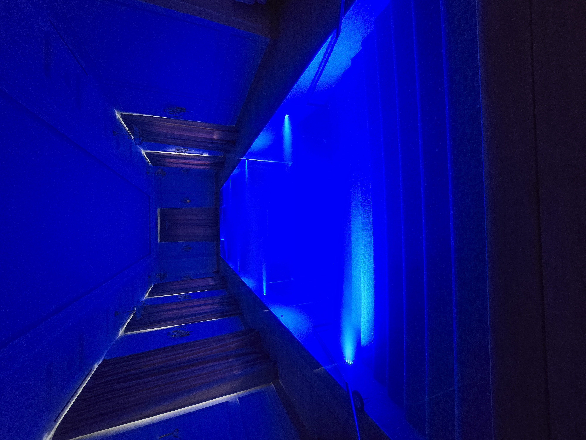

Введение
Электропотребление бассейна: решение начинается с правильного сценария
Стоимость владения бассейном складывается не только из строительства. Каждый месяц работают насосы, автоматика, подогрев, подсветка, дозирующие станции, осушители или вентиляция. Если инженерия подобрана без расчета, расходы могут оказаться выше ожиданий, а попытка экономить вручную приводит к мутной воде.
Электропотребление можно контролировать. Для этого еще на этапе проекта считают объем воды, режим фильтрации, теплопотери, тип насоса, способ подогрева и сценарии использования. Чем точнее система соответствует реальной жизни семьи, тем меньше лишних киловатт уходит в воздух.
Критерии
Что важно учесть заранее
Насосы
Фильтрационный насос работает дольше других устройств, поэтому его мощность и режим особенно важны.
Подогрев
Тип нагревателя очень влияет на электропотребление в бассейне
Осушение и вентиляция
Для крытого бассейна микроклимат влияет на счета не меньше, чем сама чаша.
Автоматика
Таймеры, датчики и частотное управление снижают расход без ухудшения качества воды.
Расчет
Получить расчет стоимости
Подготовим ориентир бюджета, состав работ и инженерные решения под ваш участок, дом и желаемый формат эксплуатации.

Инженерия
Где бассейн тратит больше всего энергии
В открытом бассейне основная статья часто связана с подогревом. Испарение забирает много тепла, поэтому теплосберегающее накрытие может дать больший эффект, чем замена нагревателя на более мощный. В крытом бассейне к расходам добавляются вентиляция, осушение и поддержание температуры воздуха.
Фильтрация тоже требует внимания. Насос не обязан всегда работать на максимальной мощности, если система спроектирована с учетом оборота воды и загрязняющей нагрузки. Частотные насосы позволяют снижать скорость в обычном режиме и повышать ее для промывки или пылесоса.
Экономия не должна ухудшать качество воды. Слишком короткая фильтрация приводит к мутности и росту расхода химии. Слишком низкая температура в крытом помещении может вызвать конденсат и проблемы с отделкой. Поэтому оптимизация начинается с расчета, а не с отключения оборудования.
Этапы
Что АЛ Пулс может предложить для экономии энергии
- Собрать нагрузки. Перечислить насосы, подогрев, свет, автоматику, осушение и аттракционы.
- Определить режимы. Разделить будни, выходные, ночной режим и периоды отсутствия владельцев.
- Использовать накрытие. Снизить испарение, теплопотери и нагрузку на подогрев.
- Подобрать насос. Рассмотреть частотное управление и правильную гидравлику вместо работы с запасом.
- Настроить автоматику. Связать фильтрацию, подогрев и датчики с фактическим использованием бассейна.
Рекомендации
Как получить ожидаемый результат
Запросите расчет не только стоимости строительства, но и ожидаемых эксплуатационных расходов. Это помогает заранее выбрать оборудование, которое будет комфортным не только в день запуска, но и через несколько сезонов.
Команда АЛ Пулс помогает связать проектирование, строительство, оборудование и сервис в единую систему. Такой подход уменьшает количество непредвиденных расходов, сохраняет эстетику объекта и делает ежедневное пользование бассейном понятным для владельца.
Консультация
Заказать консультацию
Ответим на вопросы, оценим исходные данные и предложим следующий шаг: концепцию, выезд специалиста или предварительный расчет.